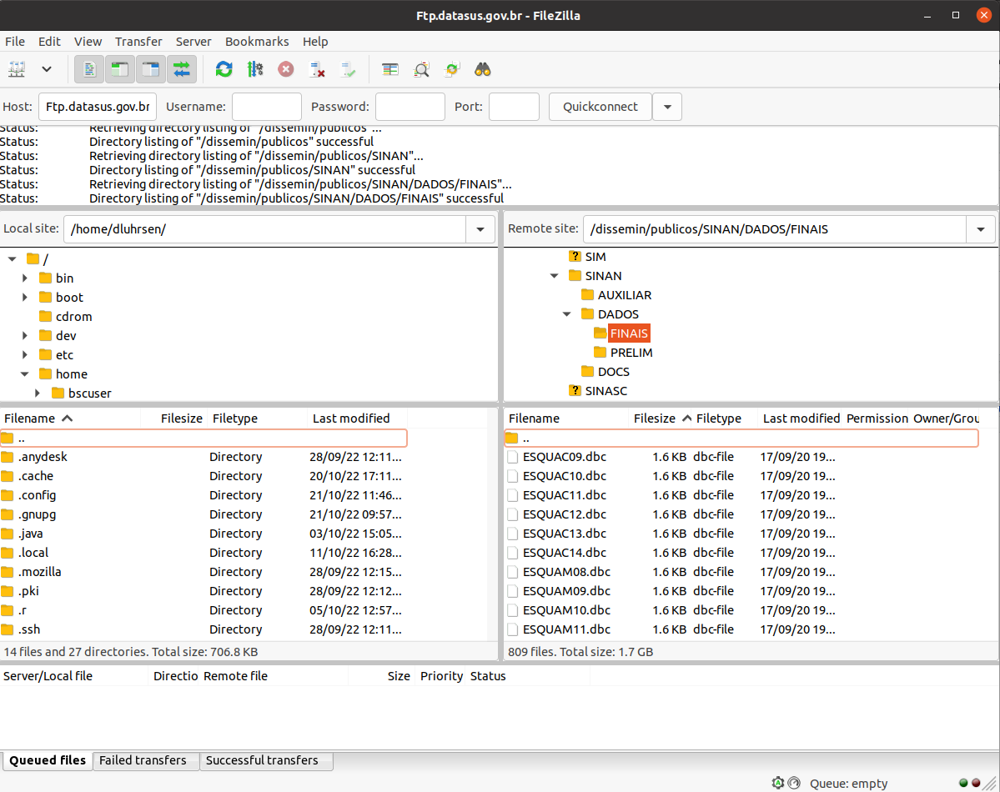

if(!"devtools" %in% installed.packages()) { install.packages("devtools") }
library(devtools)
if(!"microdatasus" %in% installed.packages()){ devtools::install_github("rfsaldanha/microdatasus") }
library(microdatasus)0_Download
How to download Health Data
Here you can find four different ways to download the anonymised raw health Brazilian data. If you do not need the raw data, you can access the DataSUS tabnet webpage and customise tables as you need it.
Depending on the disease, the available date changes because of the year the disease was introduced and / or started the notification and / or became a mandatory disease notification in Brazil. The minimum year available on SINAN FTP link is 2000. The minimum year available on SIVEP is 2003. If you need years before it and / or nominal data and data from SIVEP, you have to request to the Ministry of Health on the e-SIC portal. Nominal data require ethical committee approval in most of the cases.
Using microdatasus
Microdatasus is an R package developed to download and preprocess data from the department of informatic of the Unified Health System (DATASUS). It can be installed and loaded with the following commands in R:
The microdatasus package has two main functions: downloading data and pre-processing it. The function to download data is “fetch_datasus”, and one needs to specify:
- The temporal extent of the data: via year_start, month_start, year_end and month_end.
- The spatial extent: by specifying the federative units.
- The disease: by selecting the health information system.
- The variables: default is downloading every variable.
Here a few examples:
Observation: SINAN malaria has data for Extra-Amazon region.
chik <- fetch_datasus(year_start = 2017, year_end = 2019, information_system = "SINAN-CHIKUNGUNYA")
mal <- fetch_datasus(year_start = 2004, year_end = 2006, information_system = "SINAN-MALARIA")
den <- fetch_datasus(year_start = 2011, year_end = 2011, information_system = "SINAN-DENGUE")
zika <- fetch_datasus(year_start = 2016, year_end = 2021, information_system = "SINAN-ZIKA")The second functionality of this package is to preprocess the datasets. This includes the following steps:
- Assigning labels to categorical fields, eg CS_RACA goes from (1,2,3,…) to (Branca (White), Preta (Black), Amarela (Yellow),…)
- Converts each variable to its correct format, eg. from factor to character.
- Simplifying the age variable by changing the NU_IDADE_N field into IDADEminutos, IDADEhoras, IDADEdias, IDADEmeses and IDADEanos.
Since the datasets of all loaded diseases are different, the package has distinct function for all of them.
chik2 <- process_sinan_chikungunya(chik)
mal2 <- process_sinan_malaria(mal)
den2 <- process_sinan_dengue(den)
zika2 <- process_sinan_zika(zika)Using Filezilla
SINAN has File Transfer Protocol (FTP) link to download data directly. For this, it is necessary to use a FTP application like FileZilla.
The host link is ftp.datasus.gov.br and the remote site is /dissemin/publicos/SINAN/. Once the connection is established, the correct folder will appear on the screen. Inside of the “DADOS” folder, there are two folders: “FINAIS” and “PRELIM”. The “FINAIS” folder contains all the revised historical data, while “PRELIM” contains the non-revised raw data of the last year(s). Both are organized by disease and year. If a database is available on “FINAIS”, it means this is not available on “PRELIM”. 
Using Datasus website + commandline
The Ministry of Health provides a website to search for and download files. Enter the page and fill in the following:
- Source (Fonte): SINAN - Sistema de Informaçoes de Agravos de Notificaçao
- Modalidade: Dados
- Tipo de Arquivo: Select the disease of your interest
- Ano: Select your desired years
- UF: BR
And then click on “enviar”. A list with all selected data files will appear. Clicking on the files, a pop up will appear asking you to choose which program should be used to open the link. If you have a FTP program which accepts FTP links with the filename in the url you can select it (FileZilla does not support this). Otherwise, you can right click on the file, copy the link address and go to the command line to write the following:
wget ftp://ftp.datasus.gov.br/dissemin/publicos/SINAN/DADOS/PRELIM/DENGBR21.dbc -P Path/where/you/want/to/save/Using PySUS package
The PySUS package was developed to directly download data from Python. The package can be downloaded using the following commands in the terminal:
sudo apt install libffi-dev
sudo pip install PySUS
pip install geocoderThen, a file path for the loaded data has to be established. The following can either be typed into the command line each time before or written into the ~/.bashrc file for a permanent setting.
export PYSUS_CACHEPATH="/home/me/desired/path/.pysus"Then, within python, the data can be loaded and explored with the following lines of code.
from pysus.preprocessing.sinan import SINAN
SINAN.list_diseases()
SINAN.get_available_years('zika')
df = SINAN.download(2019,'Zika')Downloaded files can be found as parquet files in the folder that was defined above. Further functions can be seen in the guide.
How to download other data
Shapefiles
Manually Download the data
Shapefiles with polygons of Brazilian regions, states, municipalities and other administrative levels can be downloaded directly from the geoftp from Brazil Institute for geography and Statistics (IBGE). In this link you can select the year, the region (or the whole country) and the spatial resolution (municipality/microregion, mesoregion, regions, Federal units, country) that you want to dowload as a zip file.
Another option is to use the IBGE directly IBGE
Local function
- level: (required) what administrative level, either municipality “muni” or “UF”
- year: (required) Year of municipalities, starting from 2015
- outfile: The path and name of where you want to store it
- load: Should the population data be loaded into the environment? Default is TRUE
- save: Should the population data be saved on the local disk? Default is TRUE
get_br_adm_data("UF", 2015, load=TRUE, save=FALSE)
get_br_adm_data("UF", 2020, "Data/BR_muni.shp", load=FALSE)Geobr package
Administrative shapefiles can also be loaded directly in R through the package geobr.
if(!"devtools" %in% installed.packages()) { install.packages("devtools") }
library(devtools)
if(!"geobr" %in% installed.packages()){ install.packages("geobr") }
library(geobr)
mun <- read_municipality(code_muni="all", year=2018)
mun <- read_municipality(code_muni="RJ", year=2010)
mun <- read_municipality(code_muni=1200179, year=2017)Municipality codes have 6 numbers. The first number indicates the region of Brazil, the second number indicates the state, and the remaining 4 numbers indicate the municipality. If, like in the geobr dataset, the municipality code has 7 numbers, the last one needs to be excluded.
Population Data
Population estimates for each municipality can be downloaded from the IBGE (Brazilian Institute of Geography and Statistics). Here is the data for 2021. Earlier years can be downloaded from here. Alternatively, you can use the internal function below to select the desired year:
- year: selected year(s) for which the population data should be downloaded (check available years first)
- outpath: Where should the population csv be saved? Only needed if “save” is TRUE
- load: Should the population data be loaded into the environment? Default is TRUE
- save: Should the population data be saved on the local disk? Default is TRUE
get_br_pop_data(2015, "Data/Demographic/")
get_br_pop_data(2016, "Data/Demographic/", load=F)
get_br_pop_data(2017, save=F)
get_br_pop_data(c(2018,2019), save=F)Administrative units inside Amazonia legal
The list of municipalities that lay within the legal amazonia can be downloaded from IBGE with the following internal function:
- percentage: (optional) What percentage of the municipality should be inside the amazonia legal for it to be included? (defaults to 50)
- outfile: How should the list of municipalities codes be named?
get_amazon_adm(outfile="Data/AmazoniaLegal.csv")
get_amazon_adm(20, "Data/AmazoniaLegal.csv")